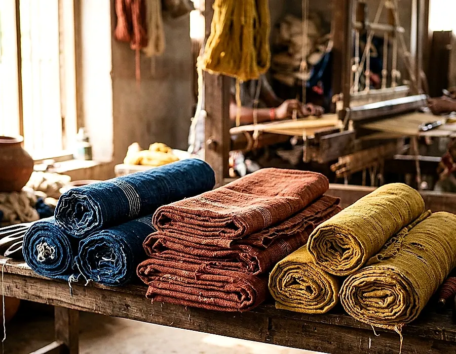

Everyday essentials
Fabric swatches, simple accessories and practical textile pieces.
₹850–₹1,490
Browse this rangePrice depends on material, construction, dimensions and details. Explore illustrative catalogue ranges—not a subscription package.

These are shopping ranges based on this example catalogue, not guaranteed current store offers.
Fabric swatches, simple accessories and practical textile pieces.
A broad mix of cotton fabric, shawls and layered accessories.
More elaborate fabric and drape concepts within this sample list.
All INR values are sample listing data. Fabric prices are per metre where identified; other goods are per piece.
| Textile type | Illustrative range | Typical unit |
|---|---|---|
| Khadi concept fabrics | ₹1,590 – ₹1,690 | per metre |
| Handloom cotton | ₹1,190 – ₹1,490 | per metre |
| Cotton / textile apparel cloth | ₹1,450 – ₹1,890 | per metre |
| Sarees | ₹4,290 – ₹5,990 | per piece |
| Stoles and dupattas | ₹1,690 – ₹1,890 | per piece |
| Shawls | ₹3,490 – ₹3,890 | per piece |
| Home textiles | ₹1,290 – ₹1,790 | per piece |
| Handwoven silk concepts | ₹4,250 – ₹7,690 | per piece |
A useful pricing conversation should make the product easier to understand.
Cotton, silk, wool and blends have different sourcing, handling and finishing considerations.
Yarn details, weaving technique and complexity may affect effort and cost.
A fabric length sold by the metre is not directly comparable with a finished saree.
Borders, decorative elements and finishing processes can change the final value.
Understand how to compare items fairly.
Unstitched fabric is commonly priced by length, while a finished stole or saree is commonly sold per piece. Always check dimensions and included components.
No. Price alone does not establish the spinning method, weaving provenance or certification. Ask for documentation when authenticity matters.
No. This is an illustrative frontend catalogue. Confirm current prices, taxes, delivery, materials and availability with a verified business before transacting.
Yes. The enquiry form can help you prepare product and material questions, but this frontend preview does not deliver messages to a merchant.
Prices are illustrative; genuine retail prices depend on verified suppliers and the specifics of each textile.
Type, grade and quantity can change cost across otherwise similar-looking textiles.
Complex patterns, labour-intensive preparations and elaborate finishes may require more time.
Width, length, per-piece sizing and finishing make unit comparisons essential.